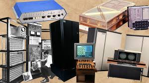

HISTORIA DE LAS COMPUTADORAS
Datos curiosos que quizas no sabias

💡 1. La primera "computadora" fue humana
Antes de que existieran las máquinas, el término "computadora" (computer) se usaba para describir a personas que hacían cálculos manualmente, especialmente mujeres que trabajaban en astronomía o matemáticas.
🏛️ 2. La primera computadora mecánica fue creada en 1822
Charles Babbage, un matemático británico, diseñó la Máquina Diferencial, considerada la primera idea de computadora programable. Nunca la terminó, pero su diseño inspiró futuras computadoras.
💾 3. El primer programa fue escrito por una mujer
Ada Lovelace, trabajando con Babbage, escribió el primer algoritmo pensado para una máquina. Es considerada la primera programadora de la historia (¡en el siglo XIX!).
🐛 4. El primer "bug" informático fue un insecto real
En 1947, una computadora Mark II dejó de funcionar. Al abrirla, encontraron una polilla atrapada entre los circuitos. Desde entonces, a los errores en código se les dice "bugs".
🧠 5. La ENIAC pesaba más de 27 toneladas
La ENIAC, una de las primeras computadoras electrónicas (1945), ocupaba una habitación entera y pesaba más de 27 toneladas. ¡Hoy una calculadora de bolsillo tiene más potencia!
6. La primera computadora programable fue alemana
En 1936, Konrad Zuse desarrolló la Z3, la primera computadora completamente automática y programable. Esto ocurrió en plena Segunda Guerra Mundial.
💻 7. Apple comenzó en un garaje
En 1976, Steve Jobs y Steve Wozniak crearon la primera computadora Apple (Apple I) en el garaje de los padres de Jobs. Hoy, Apple es una de las empresas más valiosas del mundo.
🌐 8. La World Wide Web se inventó en 1989
El científico Tim Berners-Lee creó la WWW en el CERN para compartir información entre científicos. ¡Eso es lo que usamos hoy cuando navegamos por internet!
⌨️ 9. El teclado QWERTY fue diseñado para ser lento
Fue diseñado en el siglo XIX para las máquinas de escribir, para evitar que las teclas se atascaran si se escribía demasiado rápido. Se sigue usando en la mayoría de los teclados hoy.
🤯 10. Tu celular es más potente que las computadoras que llevaron al hombre a la Luna
El iPhone o cualquier smartphone moderno tiene millones de veces más potencia que las computadoras usadas por la NASA en el Apolo 11 (1969).